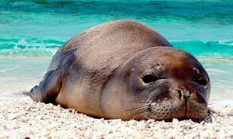
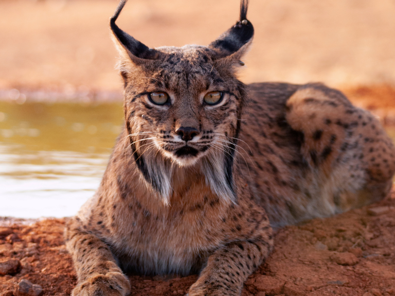

CAMBIO CLIMATICO
Las consecuencias del cambio climático incluyen ahora, entre otras, sequías intensas, escasez de agua, incendios graves, aumento del nivel del mar, inundaciones, deshielo de los polos, tormentas catastróficas y disminución de la biodiversidad.
OSO PARDO

su proceso reproductivo sea lento, otra de las dificultades que presenta la supervivencia del oso pardo es la destrucción de su hábitat natural como consecuencia de la actividad humana, por ejemplo la tala indiscriminada de los bosques. El oso pardo vive principalmente en los bosques, zonas que cada vez son más difíciles de encontrar debido a la deforestación y edificación consecuentes de la actividad humana. De hecho, cada vez se están dando más casos en los que los osos descienden de las montañas, donde las áreas boscosas todavía son más abundantes, a las zonas rurales en busca de la comida que no encuentran en la naturaleza.
FOCA MONJE MEDITERRANEO
En el pasado, los humanos cazaban a las focas monje del Mediterráneo por su piel, aceite y carne. Hoy no existe explotación comercial de la especie. La mayor parte de su disminución en la actualidad se debe al impacto humano, por la contaminación de los océanos y la destrucción de hábitats costeros.
LINCE IBERICO
Las principales amenazas para los linces ibéricos son las inducidas por la acción del hombre, sobre todo el incremento de atropellos con vehículos de motor (desde el año 2000, han muerto en Doñana 57 linces, 24 de los cuales fueron atropellados), pero también la caza ilegal, el envenenamiento, la instalación de cepos y lazos para otras especies, etc. También preocupa la cepa de la enfermedad hemorrágica vírica que afecta al conejo, su principal fuente de alimentación.
>a